The viridis scales provide colour maps that are perceptually uniform in both
colour and black-and-white. They are also designed to be perceived by viewers
with common forms of colour blindness. See also
https://bids.github.io/colormap/.
Usage
scale_colour_viridis_d(
name = waiver(),
...,
alpha = 1,
begin = 0,
end = 1,
direction = 1,
option = "D",
aesthetics = "colour"
)
scale_fill_viridis_d(
name = waiver(),
...,
alpha = 1,
begin = 0,
end = 1,
direction = 1,
option = "D",
aesthetics = "fill"
)
scale_colour_viridis_c(
name = waiver(),
...,
alpha = 1,
begin = 0,
end = 1,
direction = 1,
option = "D",
values = NULL,
space = "Lab",
na.value = "grey50",
guide = "colourbar",
aesthetics = "colour"
)
scale_fill_viridis_c(
name = waiver(),
...,
alpha = 1,
begin = 0,
end = 1,
direction = 1,
option = "D",
values = NULL,
space = "Lab",
na.value = "grey50",
guide = "colourbar",
aesthetics = "fill"
)
scale_colour_viridis_b(
name = waiver(),
...,
alpha = 1,
begin = 0,
end = 1,
direction = 1,
option = "D",
values = NULL,
space = "Lab",
na.value = "grey50",
guide = "coloursteps",
aesthetics = "colour"
)
scale_fill_viridis_b(
name = waiver(),
...,
alpha = 1,
begin = 0,
end = 1,
direction = 1,
option = "D",
values = NULL,
space = "Lab",
na.value = "grey50",
guide = "coloursteps",
aesthetics = "fill"
)Arguments
- name
The name of the scale. Used as the axis or legend title. If
waiver(), the default, the name of the scale is taken from the first mapping used for that aesthetic. IfNULL, the legend title will be omitted.- ...
Other arguments passed on to
discrete_scale(),continuous_scale(), orbinned_scale()to control name, limits, breaks, labels and so forth.- alpha
The alpha transparency, a number in [0,1], see argument alpha in
hsv.- begin, end
The (corrected) hue in
[0,1]at which the color map begins and ends.- direction
Sets the order of colors in the scale. If 1, the default, colors are ordered from darkest to lightest. If -1, the order of colors is reversed.
- option
A character string indicating the color map option to use. Eight options are available:
"magma"(or"A")"inferno"(or"B")"plasma"(or"C")"viridis"(or"D")"cividis"(or"E")"rocket"(or"F")"mako"(or"G")"turbo"(or"H")
- aesthetics
Character string or vector of character strings listing the name(s) of the aesthetic(s) that this scale works with. This can be useful, for example, to apply colour settings to the
colourandfillaesthetics at the same time, viaaesthetics = c("colour", "fill").- values
if colours should not be evenly positioned along the gradient this vector gives the position (between 0 and 1) for each colour in the
coloursvector. Seerescale()for a convenience function to map an arbitrary range to between 0 and 1.- space
colour space in which to calculate gradient. Must be "Lab" - other values are deprecated.
- na.value
Missing values will be replaced with this value.
- guide
A function used to create a guide or its name. See
guides()for more information.
See also
The documentation on colour aesthetics.
Other colour scales:
scale_alpha(),
scale_colour_brewer(),
scale_colour_continuous(),
scale_colour_gradient(),
scale_colour_grey(),
scale_colour_hue(),
scale_colour_identity(),
scale_colour_manual(),
scale_colour_steps()
Examples
# viridis is the default colour/fill scale for ordered factors
set.seed(596)
dsamp <- diamonds[sample(nrow(diamonds), 1000), ]
ggplot(dsamp, aes(carat, price)) +
geom_point(aes(colour = clarity))
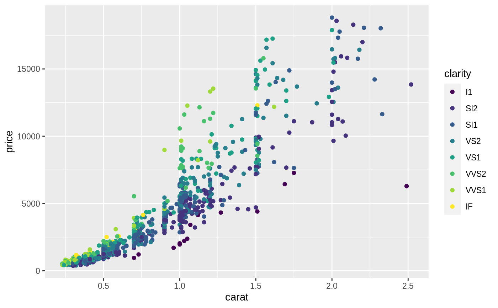
# Use viridis_d with discrete data
txsamp <- subset(txhousing, city %in%
c("Houston", "Fort Worth", "San Antonio", "Dallas", "Austin"))
(d <- ggplot(data = txsamp, aes(x = sales, y = median)) +
geom_point(aes(colour = city)))
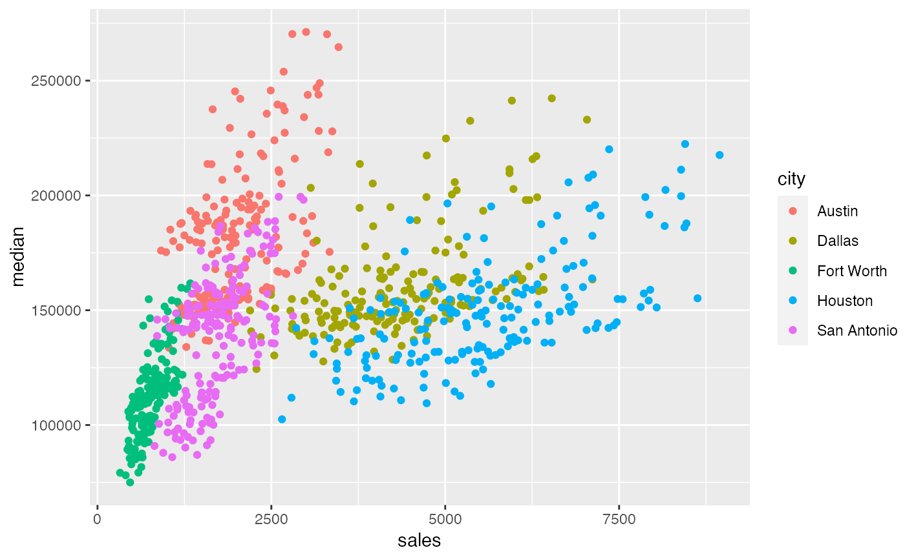
d + scale_colour_viridis_d()
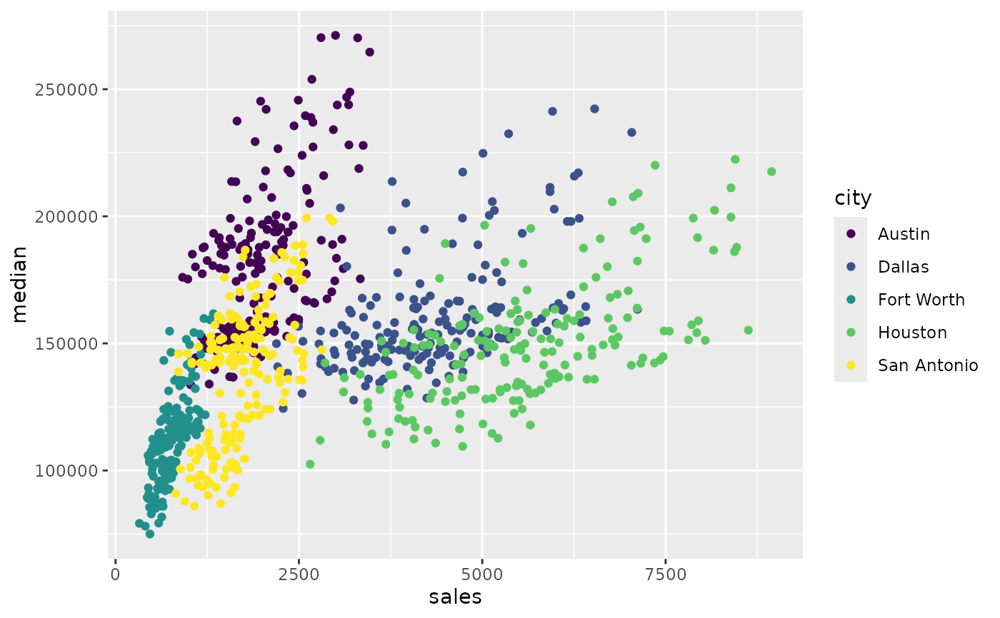
# Change scale label
d + scale_colour_viridis_d("City\nCenter")
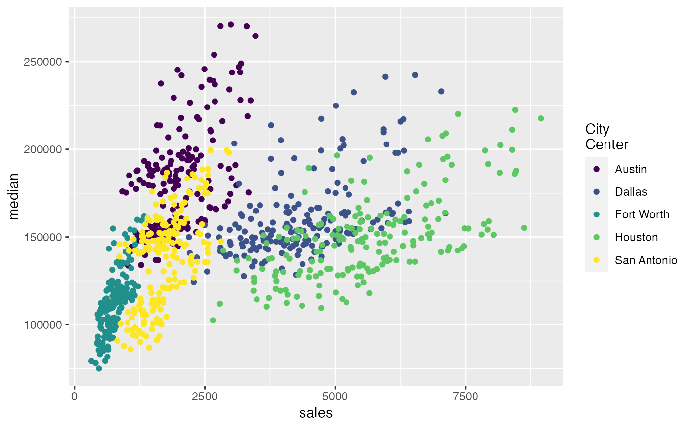
# Select palette to use, see ?scales::pal_viridis for more details
d + scale_colour_viridis_d(option = "plasma")
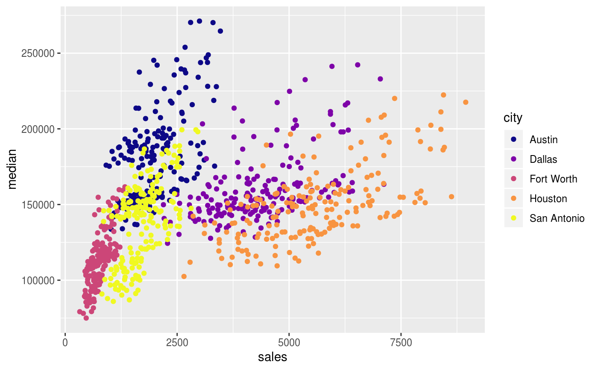
d + scale_colour_viridis_d(option = "inferno")
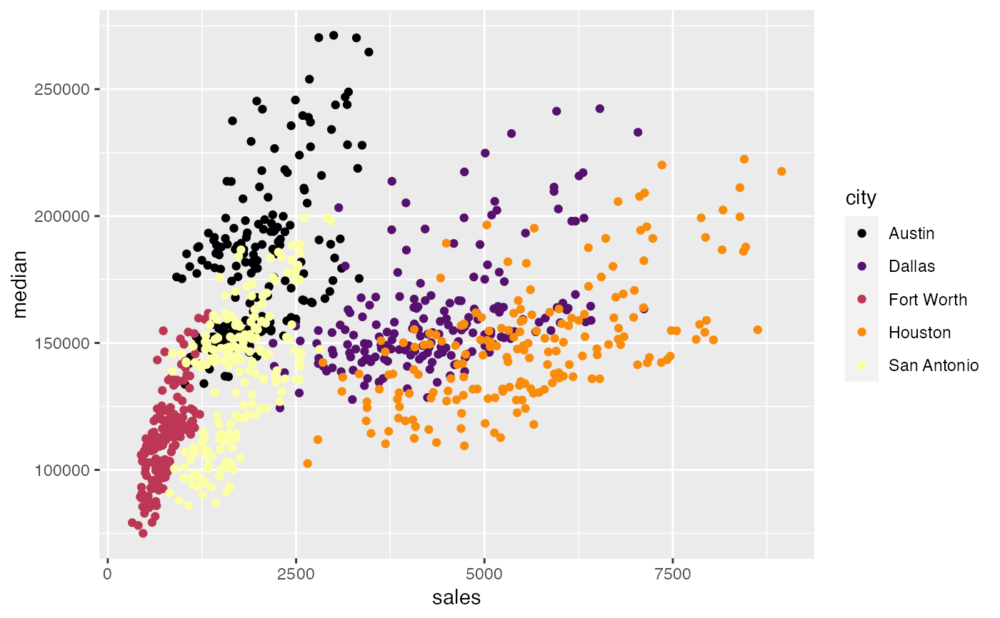
# scale_fill_viridis_d works just the same as
# scale_colour_viridis_d but for fill colours
p <- ggplot(txsamp, aes(x = median, fill = city)) +
geom_histogram(position = "dodge", binwidth = 15000)
p + scale_fill_viridis_d()
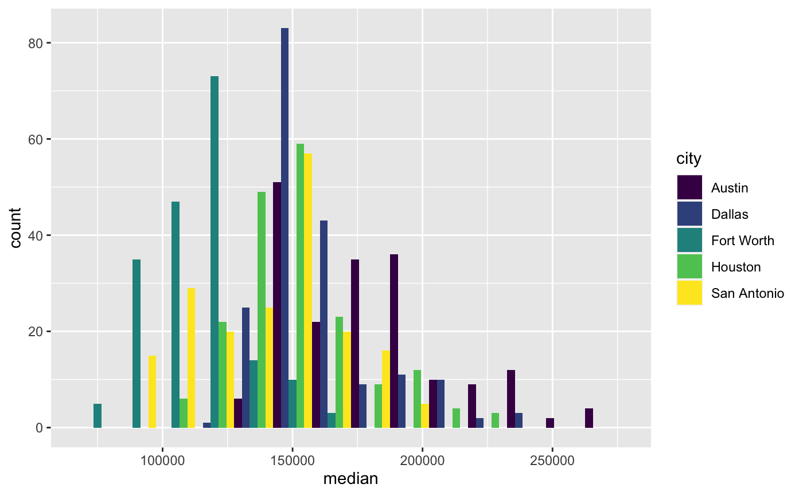
# the order of colour can be reversed
p + scale_fill_viridis_d(direction = -1)
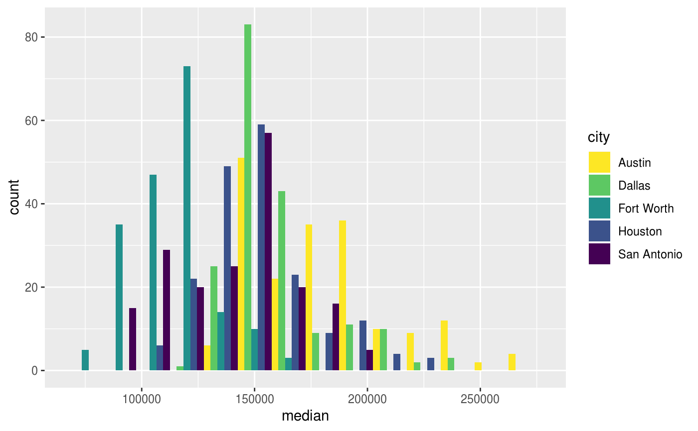
# Use viridis_c with continuous data
(v <- ggplot(faithfuld) +
geom_tile(aes(waiting, eruptions, fill = density)))
 v + scale_fill_viridis_c()
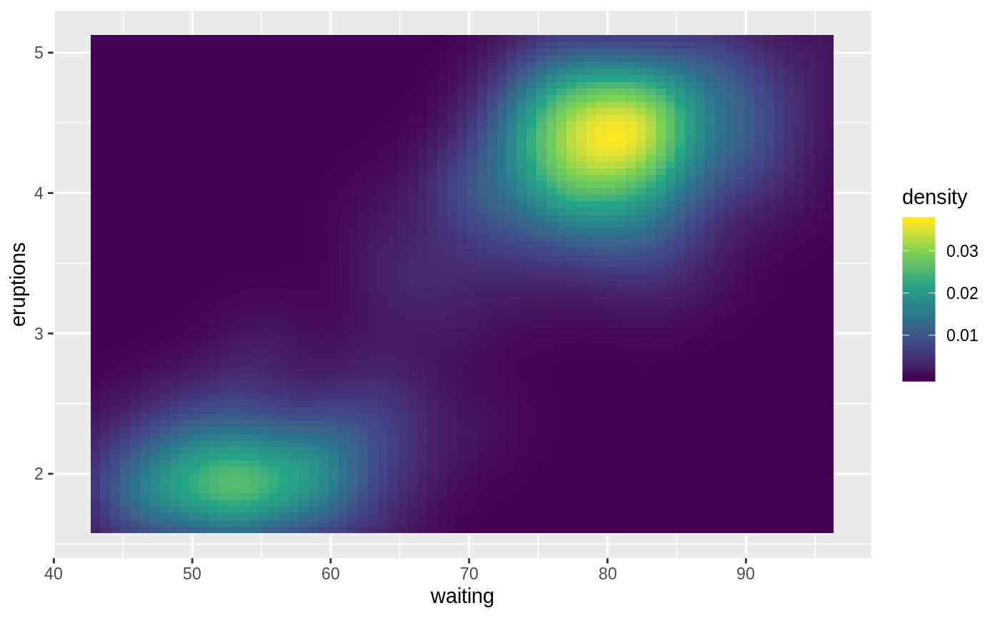
v + scale_fill_viridis_c(option = "plasma")
v + scale_fill_viridis_c()
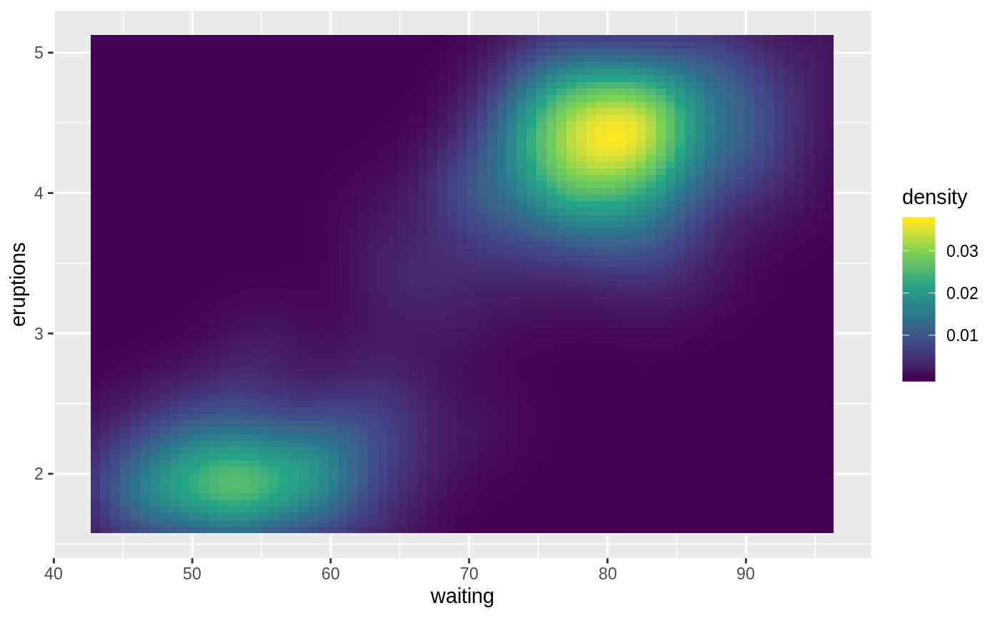
v + scale_fill_viridis_c(option = "plasma")
 # Use viridis_b to bin continuous data before mapping
v + scale_fill_viridis_b()
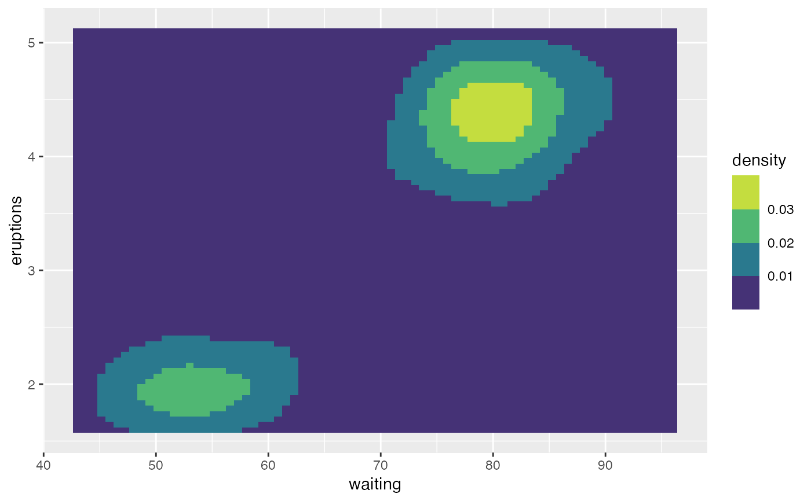
# Use viridis_b to bin continuous data before mapping
v + scale_fill_viridis_b()
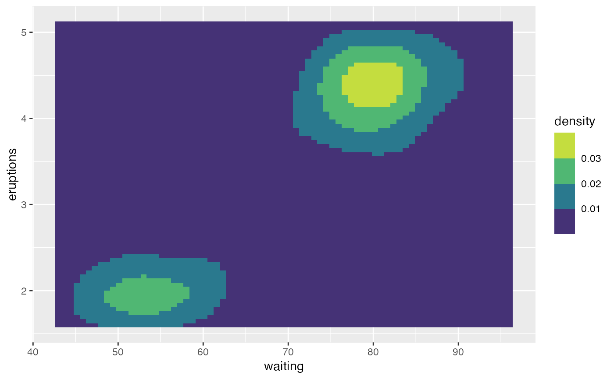